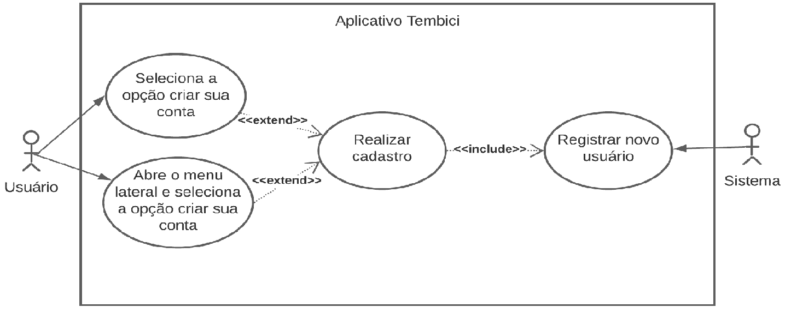
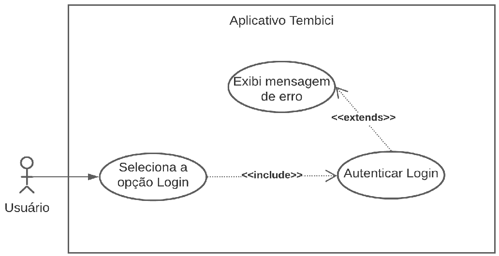
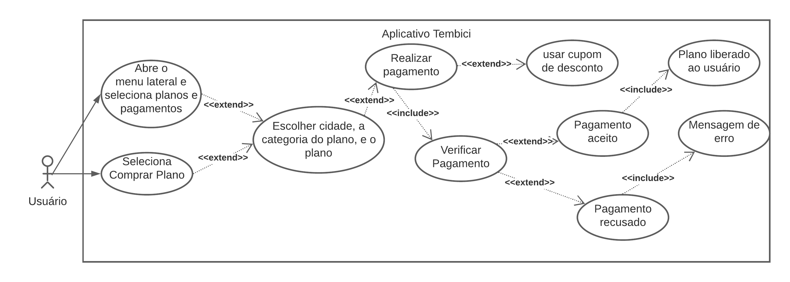
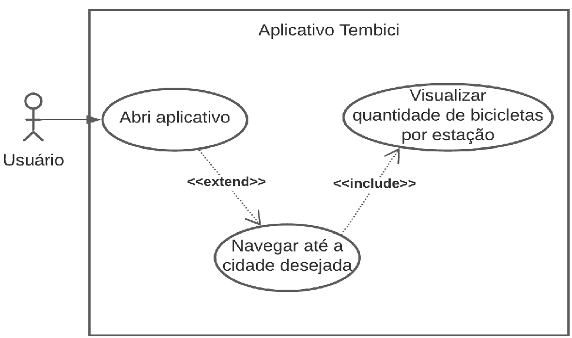
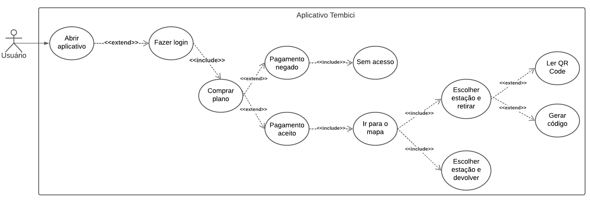
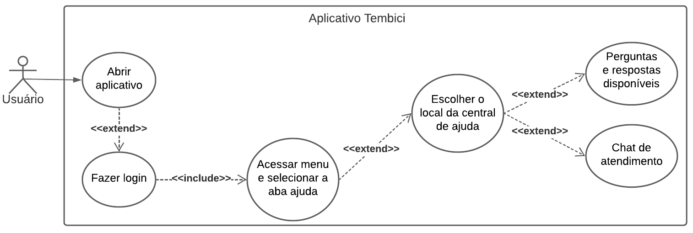
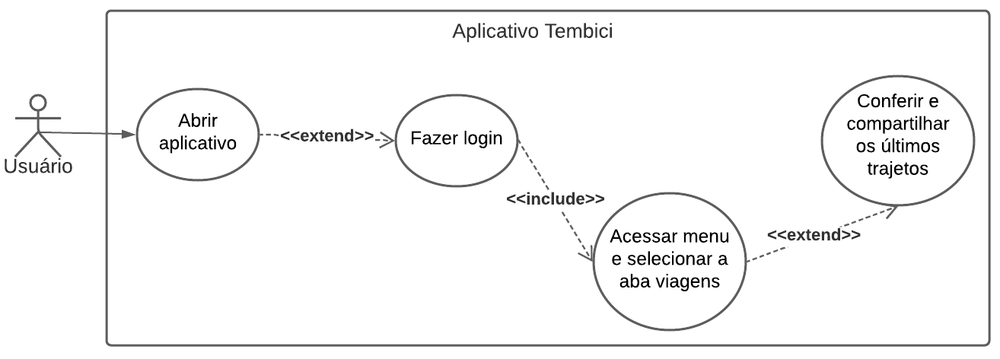

Casos de Uso
Versionamento
| Versão | Data | Modificação | Autor |
|---|---|---|---|
| 1.0 | 12/02/2022 | Criação da seção Casos de Uso e template | Victor Eduardo |
| 1.1 | 25/02/2022 | Adição dos casos de Uso 1 a 4 | Victor Eduardo |
| 1.2 | 26/02/2022 | Adição dos casos de Uso 5 a 8 | Lívia Rodrigues |
| 1.3 | 27/02/2022 | Revisão | Luiz Henrique, Victor Eduardo |
| 1.4 | 04/03/2022 | Adição revisor | Luiz Henrique |
| 1.5 | 09/04/2022 | Padronização de Legendas e Metodologias | Victor Eduardo |
| 2.0 | 11/04/2022 | Adição de algumas rastreabilidades dos artefatos | Paulo Henrique |
| 2.1 | 20/04/2022 | Adicionando novos requisitos | Luiz Henrique |
Tabela 1: Versionamento
Introdução
Também chamados de diagramas comportamentais, na notação da UML, os casos de uso são usados para descrever um conjunto de ações (uses cases - casos de uso) que um sistema ou um conjunto de sistemas (subject - sujeito) deve desempenhar em colaboração com um ou mais indivíduos externos ao sistema (actors - atores). Cada caso de uso deverá prover algum resultado observável e de valor para os atores ou outros interessados do sistema.
Metodologia
Os casos de uso abaixo foram feitos pelos integrantes do grupo Lívia Rodrigues e Victor Eduardo, após separa quais seriam os casos de uso que seriam usados para fazer os diagramas. Para cada caso de uso é colocado um diagrama feito no site Lucidchart, e uma tabela descrevendo o diagrama, sendo composta de:
| Item | Sigla | Definição |
|---|---|---|
| 1 | Versão | Versão do caso de uso |
| 2 | Autor | Nomes dos autores envolvidos nessa descrição de caso |
| 3 | Descrição | Breve descrição do caso de uso |
| 4 | Atores | Lista dos atores envolvidos no caso de uso |
| 5 | Pré-condições | Todas as restrições que devem ser atendidas antes que o caso de uso possa iniciar sua execução |
| 6 | Pós-condições | Lista do estado em que o sistema se encontrará imediatamente após a execução do cenário principal |
| 7 | Cenários Principais | Descrição do cenário, ou fluxo, principal do caso de uso |
| 8 | Cenários alternativos | Descrição dos cenários, ou fluxos, alternativos do caso de uso |
| 9 | Cenários de exceção | Descrição dos cenários, ou fluxos, de exceção do caso de uso |
| 10 | Rastreabilidade | Requisito o qual o caso de uso representa |
Nos diagramas abaixo uma seta include representa que a ação de origem sempre tem como consequência a ação destino. Já a seta extends representa que a ação origem ás vezes desencadeia a ação destino.
Casos de Uso e Especificações
1 - Caso de Uso: Fazer cadastro
 Imagem 1: Diagrama Fazer Cadastro
Autor: Livia Rodrigues e Victor Eduardo
| Item | Sigla | Definição |
|---|---|---|
| 1 | Versão | 1.0 |
| 2 | Autor | Victor Eduardo |
| 3 | Descrição | O usuário deverá conseguir fazer cadastro de sua conta |
| 4 | Atores | Usuário |
| 5 | Pré-condições | Dispositivo do usuário ter conexão com a internet, usuário estar com o aplicativo aberto |
| 6 | Pós-condições | Usuário estar devidamente cadastrado no sistema com sua conta |
| 7 | Cenários Principais | Usuário selecionar a opção fazer criar conta |
| 8 | Cenários alternativos | Usuário abrir a aba lateral e selecionar a opção fazer cadastro |
| 9 | Cenários de exceção | Usuário preencher algum dos campos de forma inválida ou não preencher um campo obrigatório |
| 10 | Rastreabilidade | RF01 |
Tabela 2: Descrição do Diagrama Fazer Cadastro
2 - Caso de Uso: Fazer login

Imagem 2: Diagrama Fazer Login
Autor: Livia Rodrigues e Victor Eduardo
| Item | Sigla | Definição |
|---|---|---|
| 1 | Versão | 1.0 |
| 2 | Autor | Victor Eduardo |
| 3 | Descrição | O usuário deverá conseguir logar em sua conta |
| 4 | Atores | Usuário |
| 5 | Pré-condições | Dispositivo do usuário ter conexão com a internet, usuário estar com o aplicativo aberto |
| 6 | Pós-condições | Usuário estar logado no sistema com sua conta |
| 7 | Cenários Principais | Usuário selecionar a opção fazer login |
| 8 | Cenários alternativos | Usuário abrir a aba lateral e selecionar a opção fazer login |
| 9 | Cenários de exceção | Usuário digitar a senha ou e-mail errados |
| 10 | Rastreabilidade | RF01 |
Tabela 3: Descrição do Diagrama Fazer Login
3 - Caso de Uso: Assinar plano

Imagem 3: Diagrama Assinar Plano
Autor: Livia Rodrigues e Victor Eduardo
| Item | Sigla | Definição |
|---|---|---|
| 1 | Versão | 1.0 |
| 2 | Autor | Victor Eduardo |
| 3 | Descrição | O usuário deverá conseguir assinar um dos planos disponíveis |
| 4 | Atores | Usuário |
| 5 | Pré-condições | Dispositivo do usuário ter conexão com a internet e estar logado em sua conta |
| 6 | Pós-condições | Usuário ter assinado um plano e poder retirar uma bicicleta |
| 7 | Cenários Principais | Usuário selecionar a opção comprar plano, selecionar a cidade, a categoria do plano e o plano desejado, e realizar pagamento |
| 8 | Cenários alternativos | Usuário abrir a aba lateral, selecionar a opção comprar plano, selecionar a cidade, a categoria do plano e o plano desejado, incluir cumpom de desconto, se houver, e realizar pagamento |
| 9 | Cenários de exceção | Pagamento ser recusado |
| 10 | Rastreabilidade | RF06, RF07, RF22 |
Tabela 4: Descrição do Diagrama Assinar Plano
4 - Caso de Uso: Ver mapa e localização atual do usuário e com as estações

Imagem 4: Diagrama Ver Mapa
Autor: Livia Rodrigues e Victor Eduardo
| Item | Sigla | Definição |
|---|---|---|
| 1 | Versão | 1.0 |
| 2 | Autor | Victor Eduardo |
| 3 | Descrição | O usuário deverá conseguir ver o mapa com as estações e bicicletas disponíveis em cada uma |
| 4 | Atores | Usuário |
| 5 | Pré-condições | Dispositivo do usuário ter conexão com a internet, usuário estar com o aplicativo aberto |
| 6 | Pós-condições | Usuário visualizar as bicicletas disponíveis em cada estação na localiação desejada |
| 7 | Cenários Principais | Usuário navegar até a localização desejada |
| 8 | Cenários alternativos | - |
| 9 | Cenários de exceção | Mapa estar indisponível |
| 10 | Rastreabilidade | RF02, RF03, RF04, RF05, RF20 |
Tabela 5: Descrição do Diagrama Ver Mapa
5 - Caso de Uso: Realizar viagem e devolução

Imagem 5: Diagrama Realizar Viagem
Autor: Livia Rodrigues e Victor Eduardo
| Item | Sigla | Definição |
|---|---|---|
| 1 | Versão | 1.0 |
| 2 | Autor | Lívia Rodrigues |
| 3 | Descrição | O usuário deverá conseguir assinar o plano e retirar a bicicleta para realizar uma viagem e devolver no final do trajeto de acordo com a quantidade de vagas disponível em cada ponto |
| 4 | Atores | Usuário |
| 5 | Pré-condições | O usuário ter feito cadastro, login e assinado um plano |
| 6 | Pós-condições | Usuário retirar bicicleta para viagem e devolver antes do tempo máximo escolhido pelo usuário no plano |
| 7 | Cenários Principais | Usuário escolher cidade que deseja pedalar e retirar bicicleta na estação desejada, gerando um código no aplicativo (inserindo na estação ao lado esquerdo da bicicleta) ou escaneando o código QR Code (encontrado no guidão da bicicleta ou debaixo do banco), e devolvendo após o trajeto de acordo com a quantidade de vagas disponível em cada ponto, visualizando o tempo de posse da bicicleta no aplicativo, passado do tempo limite o usuário será cobrado de acordo com o seu plano |
| 8 | Cenários alternativos | Usuário retirar a bicicleta em uma estação e devolver em outra; Usuário passar do tempo limite do seu plano e pagar multa de acordo com o plano escolhido; Usuário fazer viagens extras e ser cobrado por elas |
| 9 | Cenários de exceção | A compra não ter sido aprovada |
| 10 | Rastreabilidade | RF23, RF19 |
Tabela 6: Descrição do Diagrama Realizar Viagem
6 - Caso de Uso: Aba ajuda

Imagem 6: Diagrama Aba ajuda
Autor: Livia Rodrigues e Victor Eduardo
| Item | Sigla | Definição |
|---|---|---|
| 1 | Versão | 1.0 |
| 2 | Autor | Lívia Rodrigues |
| 3 | Descrição | O usuário deverá conseguir acessar a opção ajuda do menu para se informar e tirar dúvidas |
| 4 | Atores | Usuário |
| 5 | Pré-condições | O usuário ter cadastro no aplicativo e fazer login |
| 6 | Pós-condições | Usuário acessar a aba ajuda |
| 7 | Cenários Principais | Usuário conseguir acessar a aba ajuda para descobrir como o aplicativo funciona, cessar dúvidas sobre a conta, planos, pagamentos, desbloqueio/devolução e viagens |
| 8 | Cenários alternativos | Existe a opção do chat e falar com um atendente de acordo com a região escolhida pelo usuário |
| 9 | Cenários de exceção | Usuário não ter feito login |
| 10 | Rastreabilidade | RF27, RF28 |
Tabela 7: Descrição do Diagrama Aba ajuda
7 - Caso de Uso: Visualizar histórico de viagem

Imagem 7: Diagrama Histórico de viagem
Autor: Livia Rodrigues e Victor Eduardo
| Item | Sigla | Definição |
|---|---|---|
| 1 | Versão | 1.0 |
| 2 | Autor | Lívia Rodrigues |
| 3 | Descrição | O usuário deverá conseguir acessar a aba viagens do menu para visualizar o seus trajetos feitos, o seu histórico de viagem |
| 4 | Atores | Usuário |
| 5 | Pré-condições | O usuário fazer login e já ter feito algum trajeto |
| 6 | Pós-condições | Usuário acessar a aba viagem e conferir seus trajetos |
| 7 | Cenários Principais | Usuário conseguir visualizar todos os seus trajetos pelo aplicativo |
| 8 | Cenários alternativos | - |
| 9 | Cenários de exceção | Usuário não ter feito nenhuma viagem ainda |
| 10 | Rastreabilidade | RF08 |
Tabela 8: Descrição do Diagrama Histórico de Ajuda
Referências Bibliográficas
POHL, Klaus; RUPP, Chris. Fundamentos da Engenharia de Requisitos. Massachusetts: Rockynoock, 2012. (Páginas 92 - 98). Acesso em 25 Fevereiro de 2022.
Tutorial de Caso de Uso UML, Lucidchart Português, Youtube, Disponível em: